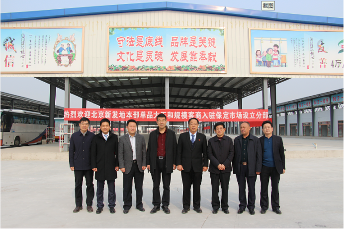
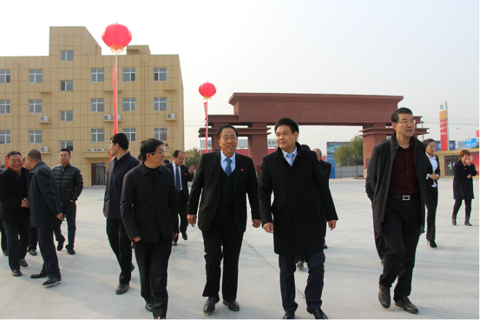
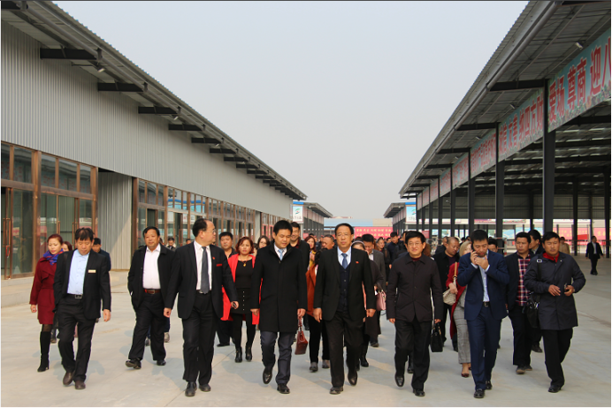
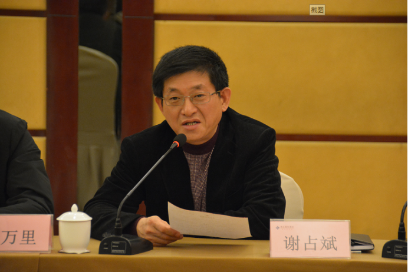
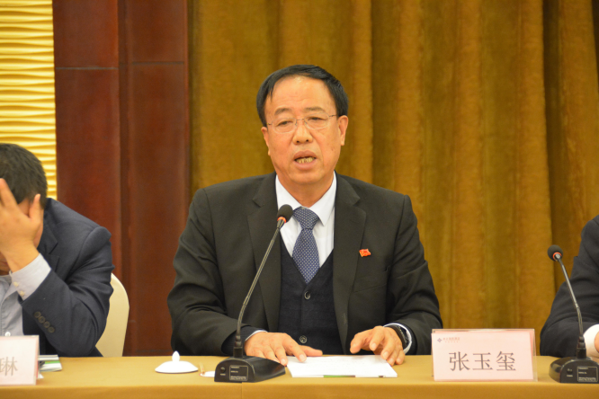
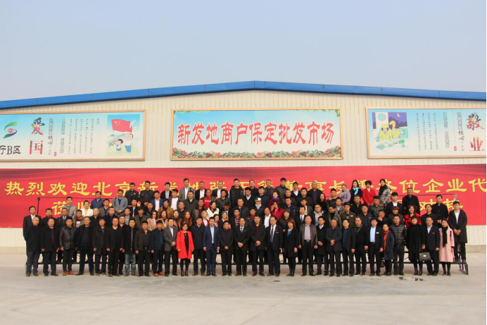

北京新发地董事长张玉玺携100余家农产品行业知名企业负责人莅临保定联农果品批发市场参观考察和指导对接
2017-11-10
11月9日，受世纪联农（北京）农产品股份有限公司总经理郑得厚邀请，北京新发地农产品有限公司董事长、中国农产品市场协会会长张玉玺、北京新发地农产品有限公司总经理张月琳、北京新发地农产品有限公司常务副总经理顾兆学等北京新发地市场领导携100余家农产品行业知名企业负责人莅临保定工农路蔬菜果品批发市场参观考察。保定市市场建设管理办公室主任谢占斌、副主任张增强、保定市莲池区常委、办公室主任赵万里 、保定市莲池区焦庄乡党委书记刘建辉 、保定市莲池区西韩蒋村党总支书记付树根等领导亲切接待张玉玺董事长一行。


张玉玺董事长一行在郑得厚总经理的陪同下参观了保定工农路蔬菜果品批发市场香蕉交易大厅、综合交易大厅、干果交易大厅，在蔬菜区办公楼楼顶、果品区配套商户办公楼楼顶分别查看了蔬菜区、果品区全貌，并对二期蔬菜区升级改造提出了多条宝贵的建议。

随后，北京新发地市场与保定工农路市场，进行对接座谈。保定市市场建设管理办公室副主任张增强向张玉玺董事长一行详细介绍了保定工农路蔬菜果品批发市场提升改造项目整体规划、项目进展。

谢占斌主任表示：北京新发地作为首都的大“菜篮子”和大“果盘子”，承担了北京90%以上的蔬菜水果供应，这次张玉玺董事长携100余家北京新发地农产品批发企业负责人来到保定工农路蔬菜果品批发市场参观考察和指导对接，不仅给保定工农路市场带来了新的机遇和前景，同时也加快了京津保率先联动发展进度，促进保定农产品流通行业的快速发展。

座谈会上张玉玺董事长表示，保定工农路蔬菜果品批发市场作为国内第一批出现的农产品批发市场，拥有深厚的历史底蕴，这次携北京新发地100余家农产品批发企业负责人来到保定工农路市场，不仅能够加快保定工农路市场与北京新发地市场的业务对接，同时能够扩宽北京新发地的覆盖范围，保证保定“菜篮子”“果盘子”的供应需求。
参观对接后，多家企业达成了在保定设立分部的合作方案，随后双方在保定联农果品批发市场交易大厅前进行了合影留念。